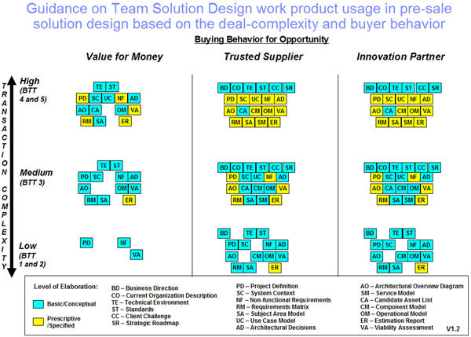

Usage considerations for pre-sale (Team Solution Design): In a pre-sale context, the Team Solution
Design work products illustrate the basic ideas of the proposed architecture. They serve as a means of
confirming architectural understanding between the ITA and the client. Team Solution Design work products are
based on existing UMF work products, but typically add guidance tailored to the pre-sale environment regarding
appropriate levels of elaboration. In general, the level of elaboration required in a pre-sale environment is not
as high as during project implementation. In some cases additional elaboration is required and the IT architect may
consult the included guidance from the base work product. The following information will provide additional insight
regarding use of these Team Solution Design work products in a pre-sale environment.
-
Our assumption is that the solution design is for an IT solution to a business or IT problem. That is, not a
Business Consulting engagement only.
-
The recommended level of elaboration is either Basic/Conceptual or Prescriptive/Specified.
-
The work products created in pre-sale solution design go through further elaboration after the sale, i.e., during
Macro and Micro Design.
-
Recommended work products, and level of elaboration, are based on a hypothetical “typical” situation.
-
Suggested level of elaboration applies only when work products are adopted.
-
Under Trusted Supplier, there can be a difference in level of responsibility of IBM versus the client. We assume
that greater responsibility would likely increase risk.
-
To a Technical Solution Architect, Trusted Supplier and Innovation Partner projects are virtually identical.
-
Bottom line: Provide just enough detail to assure the client that requirements are understood and solution
will address them.
In a pre-sale context, it is often appropriate to provide the work product content as part of a proposal presentation
or as the technical design portion of a proposal document. To ensure understanding and sharing, the content and
format of the work product should be maintained but the UMF Word template may not be appropriate.
It is often the case that solutions will need to be produced during the process of responding to a Request for Proposal
(RFP). Typically, RFP’s expect the response from the vendors to be in specific format. However, to the extent possible,
TeamSD should be used in this situation to ensure the quality and consistency of the created solution. The detail
from some work products will be inserted into the RFP response, while other work products may be done specifically to
document the design for a Technical and Delivery Assessment (TDA), if and when needed, and possibly for reuse in a
future opportunity.

|